由于公司外卖业务需要用到顺丰的配送体系，技术上需要对接顺丰
个人比较感兴趣，但是顺丰没有提供sdk，所以研究下自己写了一个
完整代码已上传github 🎉：https://github.com/neatlife/spring-boot-sfcity
技术选型
三方sdk编写有两种实现方式
- 不依赖框架，更通用，但是集成成本较高
- 依赖框架，比如spring boot，这样使用起来效率更高
为了提高使用效率，这里选择基于spring boot框架进行编写
前期准备
有很多基于spring boot的sdk了，骨架就不需要自行搭建了，找了下面几个进行参考
- https://github.com/jibaole/spring-boot-starter-alimq
- https://github.com/spring-projects/spring-data-redis
研究api文档
顺丰同城api文档地址：http://commit-openic.sf-express.com/open/api/docs/index#/apidoc
目前顺丰同城的开发者api个人可以注册，注册后可以设置回调地址
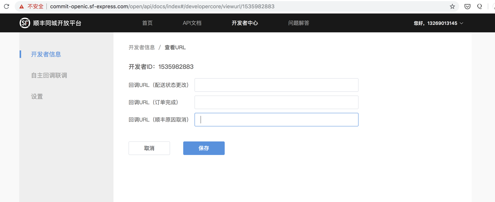
找出文档中的关键点
在后续设计sdk上，考虑下这些点，可以让sdk更好用
顺丰状态回调可能会失败，通过定时调用查询订单状态接口可以补齐状态
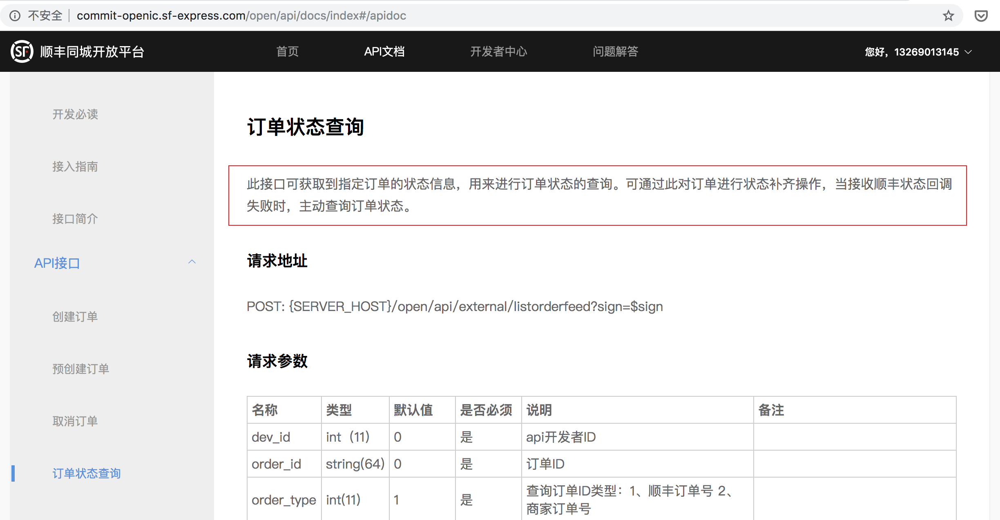
可以实时获取配送员的坐标，这个可用在app上实时显示配送员位置功能
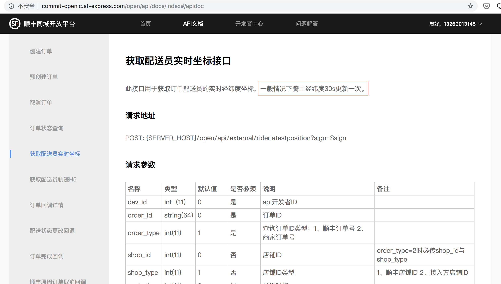
创建项目
虽然项目是作为和spring boot一起使用的，但是我们并不需要依赖完整的spring boot框架，所以创建一个maven项目就是ok的
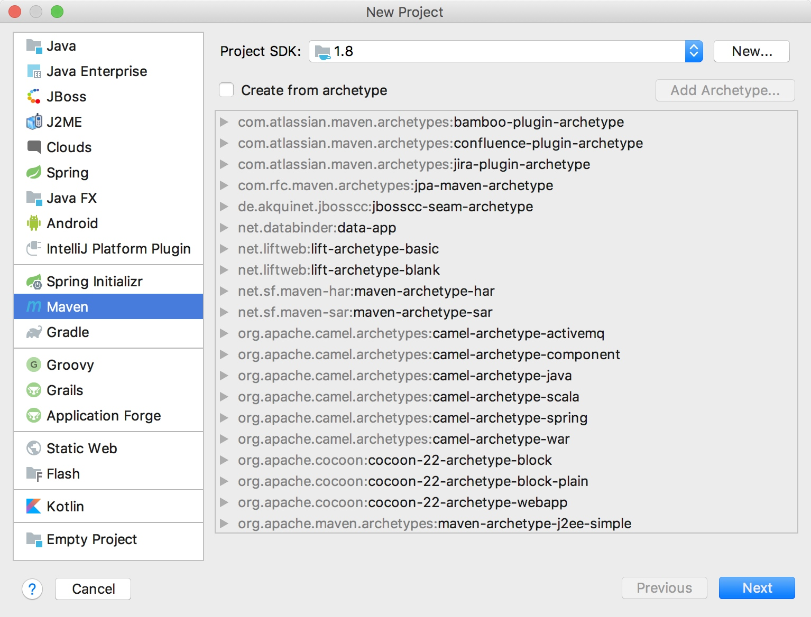
指定groupId, ArtifactId
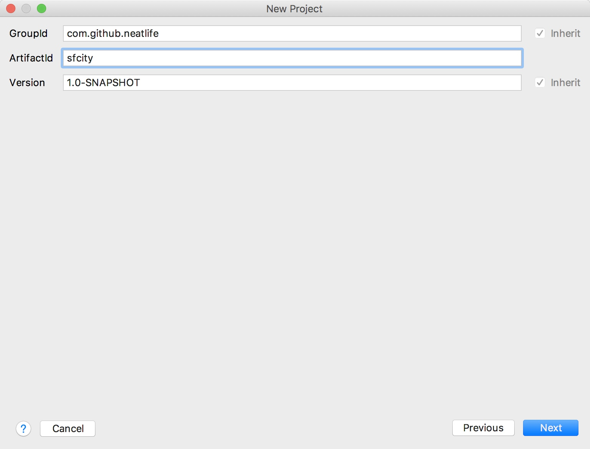
为了享受spring boot的自动配置，需要pom.xml里面加上spring-boot-autoconfigure库依赖
<dependency>
<groupId>org.springframework.boot</groupId>
<artifactId>spring-boot-autoconfigure</artifactId>
</dependency>
加上常用的http，lombok等库，最终pom文件内容如下
<?xml version="1.0" encoding="UTF-8"?>
<project xmlns="http://maven.apache.org/POM/4.0.0"
xmlns:xsi="http://www.w3.org/2001/XMLSchema-instance"
xsi:schemaLocation="http://maven.apache.org/POM/4.0.0 http://maven.apache.org/xsd/maven-4.0.0.xsd">
<modelVersion>4.0.0</modelVersion>
<groupId>com.github.neatlife</groupId>
<artifactId>sfcity</artifactId>
<version>1.0-SNAPSHOT</version>
<build>
<plugins>
<plugin>
<groupId>org.apache.maven.plugins</groupId>
<artifactId>maven-compiler-plugin</artifactId>
<configuration>
<source>8</source>
<target>8</target>
</configuration>
</plugin>
</plugins>
</build>
<dependencies>
<dependency>
<groupId>org.springframework.boot</groupId>
<artifactId>spring-boot-autoconfigure</artifactId>
</dependency>
<dependency>
<groupId>org.springframework.boot</groupId>
<artifactId>spring-boot-starter-test</artifactId>
</dependency>
<dependency>
<groupId>org.springframework.boot</groupId>
<artifactId>spring-boot-starter-web</artifactId>
</dependency>
<dependency>
<groupId>org.projectlombok</groupId>
<artifactId>lombok</artifactId>
<version>1.18.0</version>
<scope>provided</scope>
</dependency>
<dependency>
<groupId>com.fasterxml.jackson.core</groupId>
<artifactId>jackson-core</artifactId>
<version>2.9.8</version>
</dependency>
<dependency>
<groupId>com.fasterxml.jackson.core</groupId>
<artifactId>jackson-databind</artifactId>
<version>2.9.8</version>
</dependency>
<dependency>
<groupId>com.fasterxml.jackson.core</groupId>
<artifactId>jackson-annotations</artifactId>
<version>2.9.8</version>
</dependency>
</dependencies>
<dependencyManagement>
<dependencies>
<dependency>
<!-- Import dependency management from Spring Boot -->
<groupId>org.springframework.boot</groupId>
<artifactId>spring-boot-dependencies</artifactId>
<version>2.0.2.RELEASE</version>
<type>pom</type>
<scope>import</scope>
</dependency>
</dependencies>
</dependencyManagement>
</project>
自动配置api的密钥
把从顺丰api后台获取的配置信息写入配置文件：src/main/resources/application.properties
所有配置如下
sfcity.developer-id= xxx
sfcity.developer-key= xxx
sfcity.shop-id= xxx
sfcity.api-url= https://commit-openic.sf-express.com
使用spring boot的自动配置机制，能够很方便的从配置文件中读取配置
核心代码如下
@ConfigurationProperties(prefix = "sfcity")
@Data
public class Properties {
private Integer developerId;
private String developerKey;
private String shopId;
private String apiUrl;
}
参考：
- src/main/java/com/github/neatlife/AutoConfiguration.java
- src/main/java/com/github/neatlife/Properties.java
映射请求参数和响应参数
因为要做一个通用的sdk库，那么所有的请求参数和响应参数都需要映射，方便使用
这里为了演示就拿创建订单接口举例了
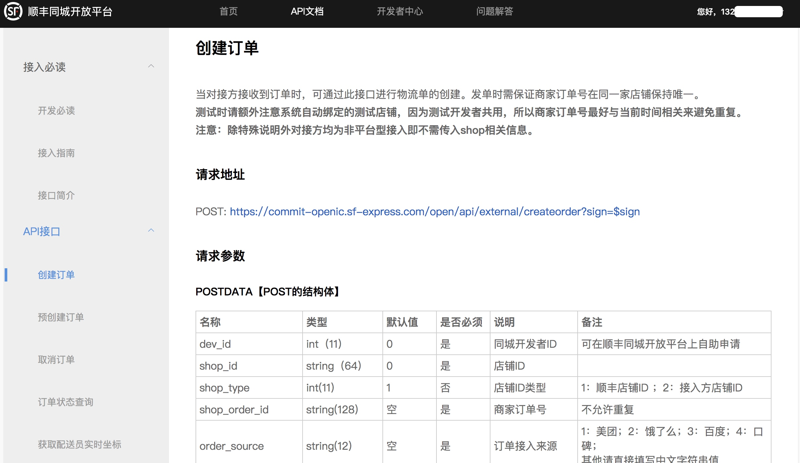
创建订单请求实体
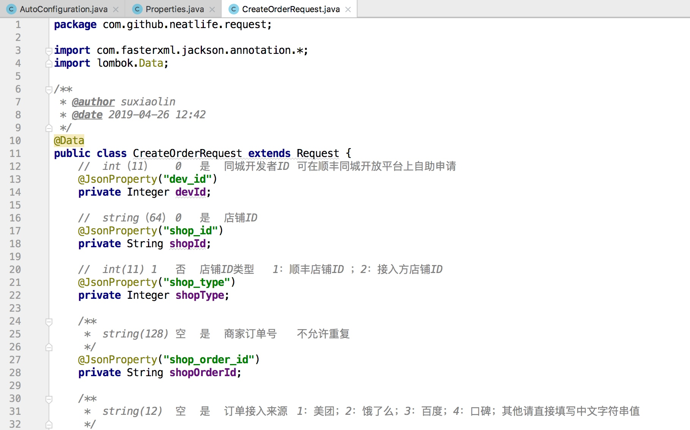
响应实体
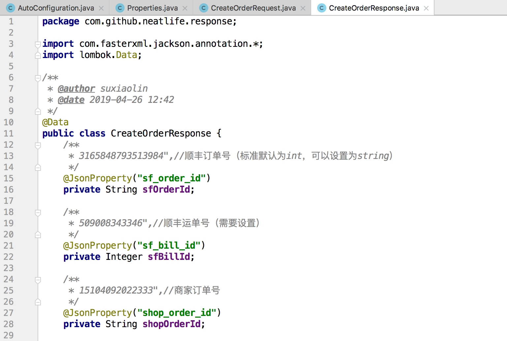
还有一些关联的实体一并创建，最终实体效果如下：
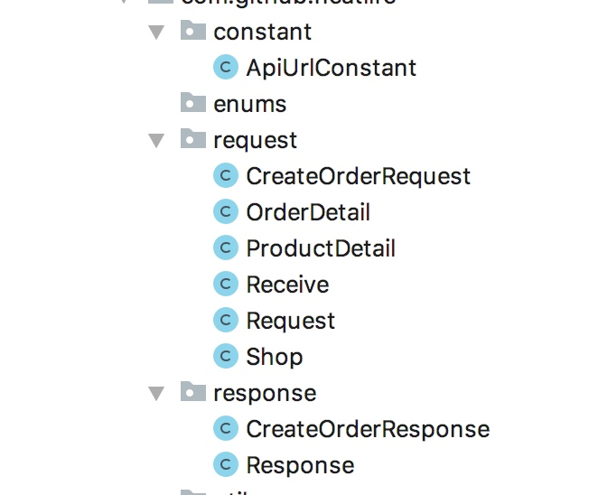
http处理工具类
使用resetTemplate进行请求，参考：https://juejin.im/post/5b88b1dbf265da435743accf
核心代码如下：
public static Response post(Integer appId, String appSecret, String url, Request request) {
String content = JsonUtil.toJsonString(request);
String sign = SignUtil.sign(appId.toString(), appSecret, content);
url = url + "?sign=" + sign;
RestTemplate restTemplate = new RestTemplate();
HttpHeaders headers = new HttpHeaders();
headers.setContentType(MediaType.APPLICATION_JSON_UTF8);
HttpEntity<String> httpEntity = new HttpEntity<>(content, headers);
ResponseEntity<String> httpResponse = restTemplate.postForEntity(url, httpEntity, String.class);
Response response = JsonUtil.toObject(httpResponse.getBody(), Response.class);
if (response.getErrorCode() != 0) {
log.error("errorData: {}", response.getErrorData());
throw new RuntimeException(response.getErrorMsg());
}
return response;
}
json处理工具类
json处理工具类直接从自己编写的框架里拿，参考：https://github.com/neatlife/jframework/blob/master/src/main/java/com/github/neatlife/jframework/util/HttpUtil.java
签名工具类
顺丰提供了java的签名示例代码

在其基础上修改即可，核心代码如下
public static String sign(String appId, String appSecret, String content) {
// 假设原始内容JSON为 {"hello":"kitty"}
// content : "{\"hello\":\"kitty\"}"
String toSign = content + "&" + appId + "&" + appSecret;
// toSign : "{\"hello\":\"kitty\"}&1234567890&0123456789abcdef0123456789abcdef";
String md5Result = md5(toSign.getBytes(StandardCharsets.UTF_8));
// md5Result : "ef3435b1480e553480e19e3e162fb0be"
// signResult : "ZWYzNDM1YjE0ODBlNTUzNDgwZTE5ZTNlMTYyZmIwYmU="
return base64Encode(md5Result.getBytes(StandardCharsets.UTF_8));
}
完整代码参考：src/main/java/com/github/neatlife/util/SignUtil.java
定义接口常量
把需要调用的接口地址放到统一的常量文件中，方便管理
核心代码如下：
public class ApiUrlConstant {
private static final String CREATE_ORDER_URL = "/open/api/external/createorder";
private static String sfCityHost;
public static String getCreateOrderUrl() {
return sfCityHost + CREATE_ORDER_URL;
}
public static void setSfCityHost(String sfCityHost) {
ApiUrlConstant.sfCityHost = sfCityHost;
}
}
调用顺丰创建订单接口
上面步骤都准备完成后，进行到最重要的调用环节了，有了上面的准备，这一步也比较容易了
核心代码如下
public CreateOrderResponse createOrder(CreateOrderRequest createOrderRequest) {
createOrderRequest.setDevId(developerId);
createOrderRequest.setShopId(shopId);
Response response = HttpUtil.post(
developerId,
developerKey,
ApiUrlConstant.getCreateOrderUrl(),
createOrderRequest
);
return JsonUtil.toObject(response.getResult(), CreateOrderResponse.class);
}
编写自动测试
创建测试文件：src/test/java/com/github/neatlife/SfClientTest.java
填充测试数据
调用创建订单方法
@Test
public void createOrder() {
CreateOrderResponse createOrderResponse = sfClient.createOrder(createOrderRequest());
Assert.assertNotNull(createOrderResponse.getSfOrderId());
}
private CreateOrderRequest createOrderRequest() {
CreateOrderRequest createOrderRequest = new CreateOrderRequest();
createOrderRequest.setShopOrderId(System.currentTimeMillis() + "");
createOrderRequest.setOrderSource("测试");
createOrderRequest.setPayType(1);
createOrderRequest.setOrderTime(DateUtil.currentSecond().intValue());
createOrderRequest.setIsAppoint(0);
createOrderRequest.setIsInsured(0);
createOrderRequest.setRiderPickMethod(1);
createOrderRequest.setPushTime(DateUtil.currentSecond().intValue());
createOrderRequest.setVersion(17);
createOrderRequest.setShop(
Shop.builder()
.shopName("店铺名")
.shopPhone("13266666666")
.shopAddress("朝阳区高碑店镇四惠大厦F1-008")
.shopLng("116.514236")
.shopLat("39.905328")
.build()
);
createOrderRequest.setReceive(
Receive.builder()
.userName("小明")
.userPhone("13288888888")
.userPhone("北京")
.userLng("116.3534196")
.userLat("40.0159778")
.userAddress("朝阳区高碑店镇四惠大厦F1-008")
.cityName("北京市")
.build()
);
createOrderRequest.setOrderDetail(
OrderDetail.builder()
.totalPrice(100)
.productType(1)
.weightGram(500)
.productNum(1)
.productTypeNum(1)
.productDetail(
Stream.of(
ProductDetail.builder()
.productName("小炒肉")
.productNum(1)
.build()
).collect(Collectors.toList())
)
.build()
);
return createOrderRequest;
}
填充测试数据时注释对照顺丰文档，保证必填字段都有值
查看运行效果：
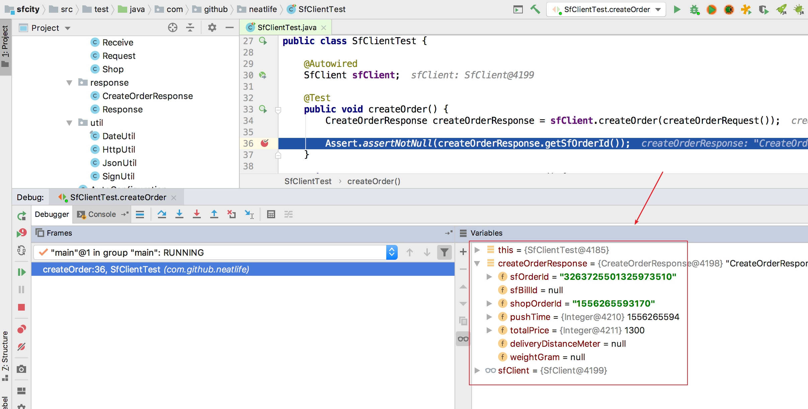
顺丰返回了创建订单成功的响应😄
一些注意的点
自动配置时，把api地址注入接口常量文件中，方便读取
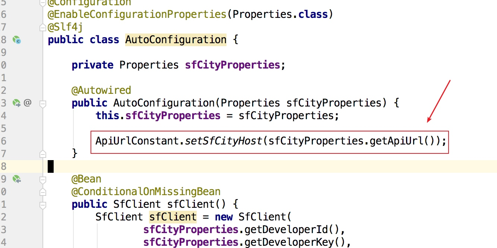
http调用会有失败的可能，需要考虑进行请求补偿，一般有下面两种重试方式
- 定时任务，定时进行补偿
- 使用消息队列的补偿机制
创建外卖订单前，可以先调用顺丰预创建订单核查顺丰是否会接单
打包
mvn clean package -Dmaven.test.skip=true
查看效果
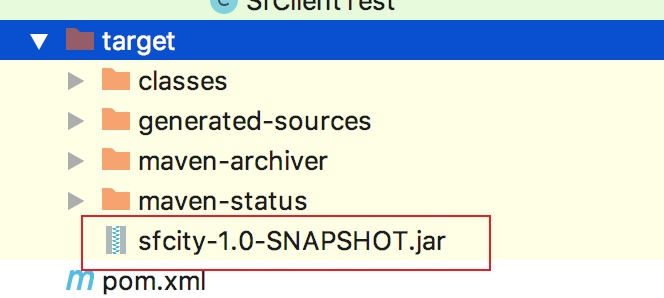
然后把jar包拷到需要的项目就可以使用了
后续传到了maven中央仓库，也可以直接使用maven下载
在spring boot项目中使用jar包
用idea打开spring boot项目，在项目设置的库依赖里引用jar包
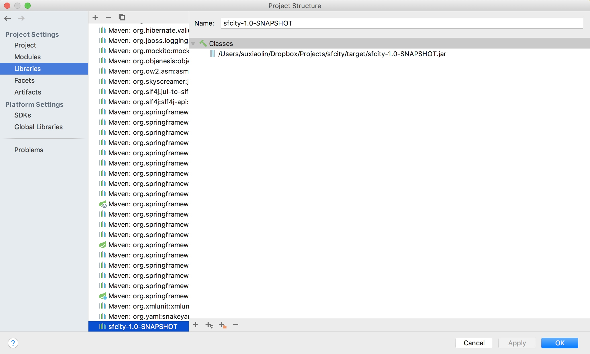
然后在启动类中让spring boot扫到这个库，就可以自动配置加载了
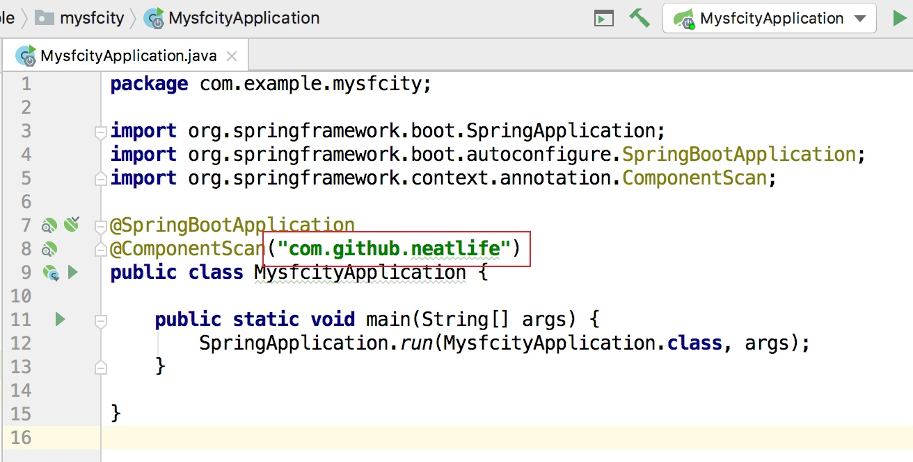
其它接口
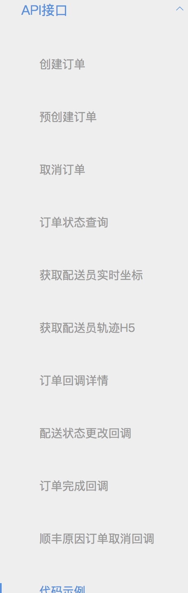
按照上面创建订单的步骤编写+测试即可
上传maven中央仓库
参考： https://blog.csdn.net/ljbmxsm/article/details/78009268
持续更新...